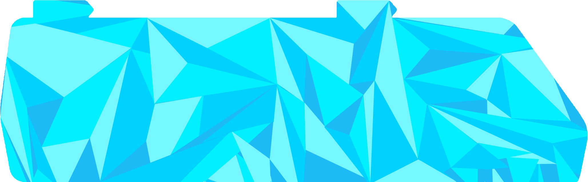
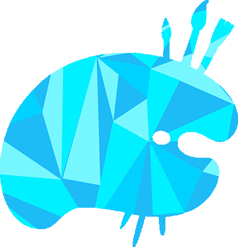

Exun 2013

A school design competition entry, 2013.
I worked with Panini Pandey and Aditya Garg on this design for Exun 2013. These are our original blue, angular illustrations.
Design Philosophy
The shape
The RV uses a few large, angular shapes, with lighter blue facets against the white background.
The color
We used bright blue throughout the illustrations, with lighter facets against the white background.
